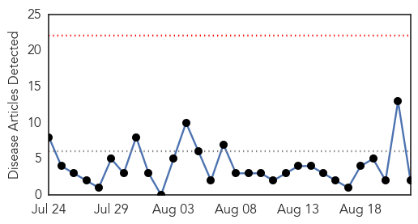
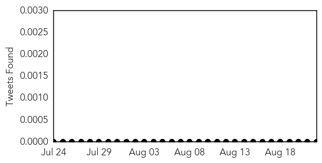
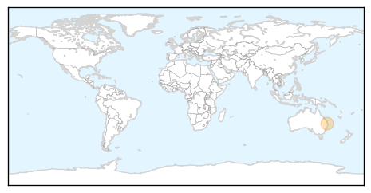
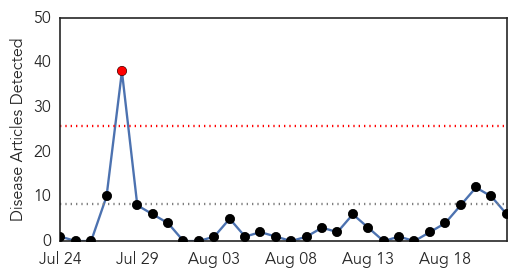
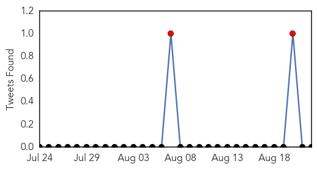
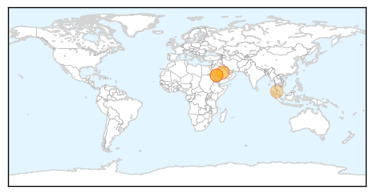

Measles
30-Day Web Trend
0 alerts, 0 warnings

30-Day Twitter Trend
0 alerts, 0 warnings

Article Locations
Article Confidences

Top Articles:
Top Tweets:
-
No tweets found for Aug 22, 2015
MERS
30-Day Web Trend
1 alerts, 0 warnings

30-Day Twitter Trend
0 alerts, 2 warnings

Article Locations
Article Confidences

Top Articles:
- 0.996
- WHO official coming to assess MERS outbreak
- 0.991
- Keep the camel alive if you want to survive! Saudi to ban sacrificing camels during Hajj
- 0.986
- No camel slaughter during this Haj!
- 0.986
- MERS stops most camel sacrifices during Hajj
- 0.974
- Don’t visit camel farms, Malaysian hajj pilgrims told
- 0.954
- MERS Cases Surge in Saudi Arabia Month Before Hajj
Top Tweets:
- 0.729
- AFD Blog `@WHO Update On Saudi MERS Cases – August 21st' MERS-CoV http://t.co/kSNLsRjanT
- 0.596
- AFD Blog `Saudi MOH Reports 7 New MERS Cases In Riyadh' MERS-CoV http://t.co/jfTh0wOGre